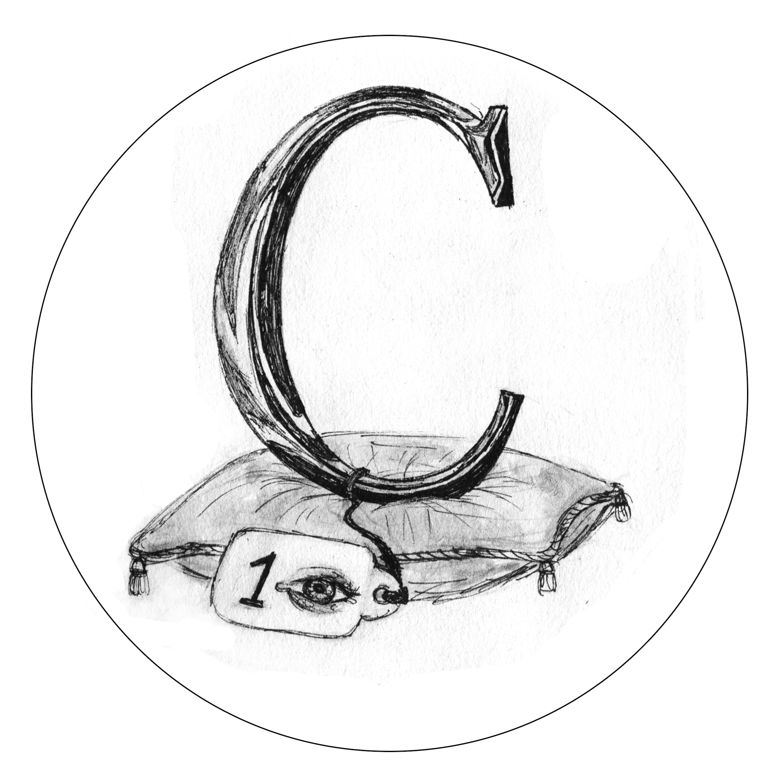
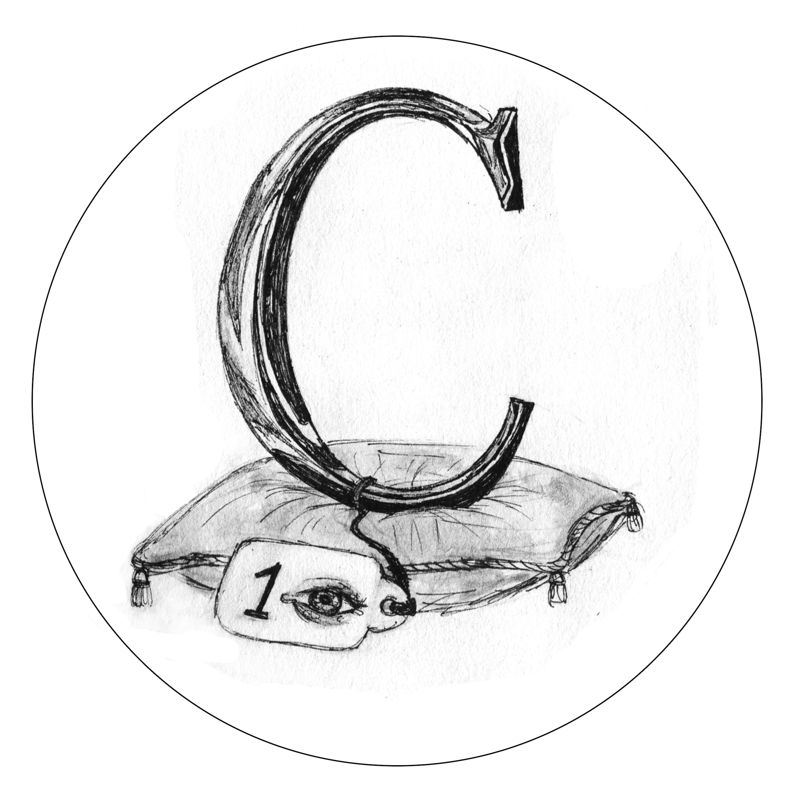
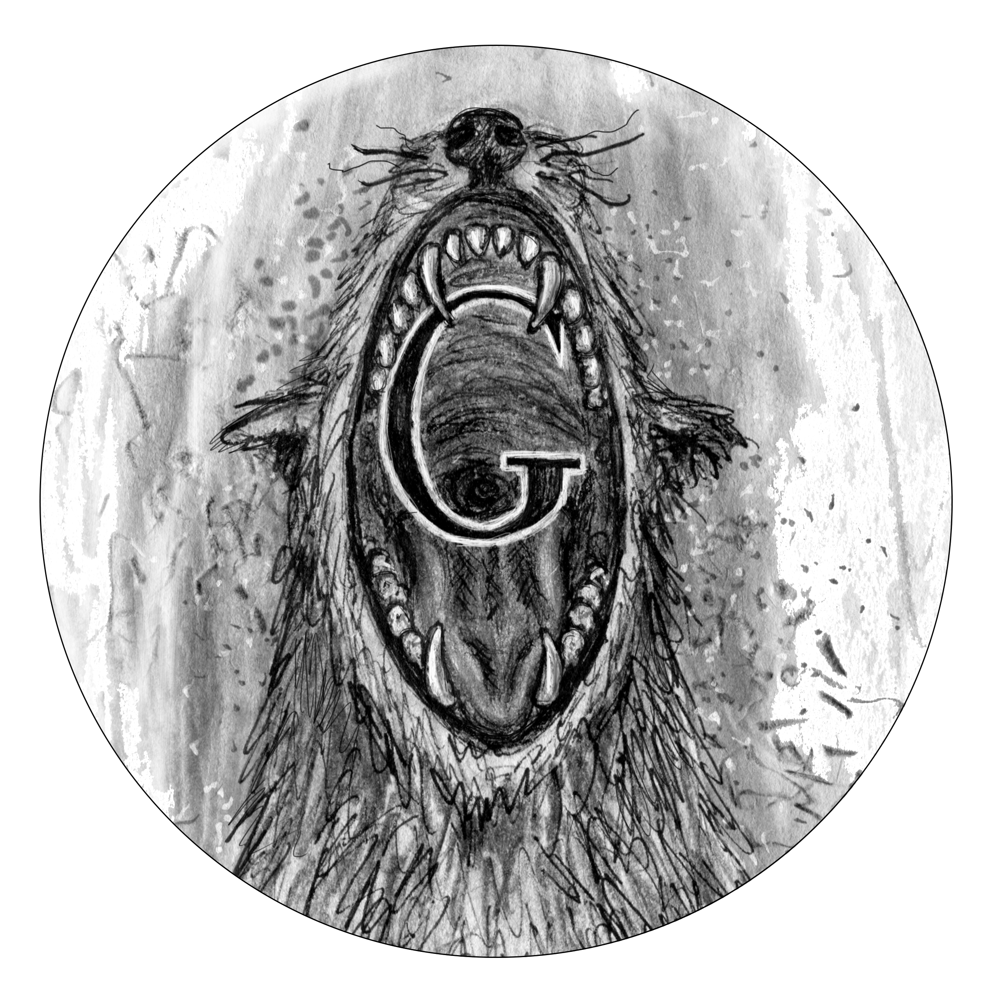
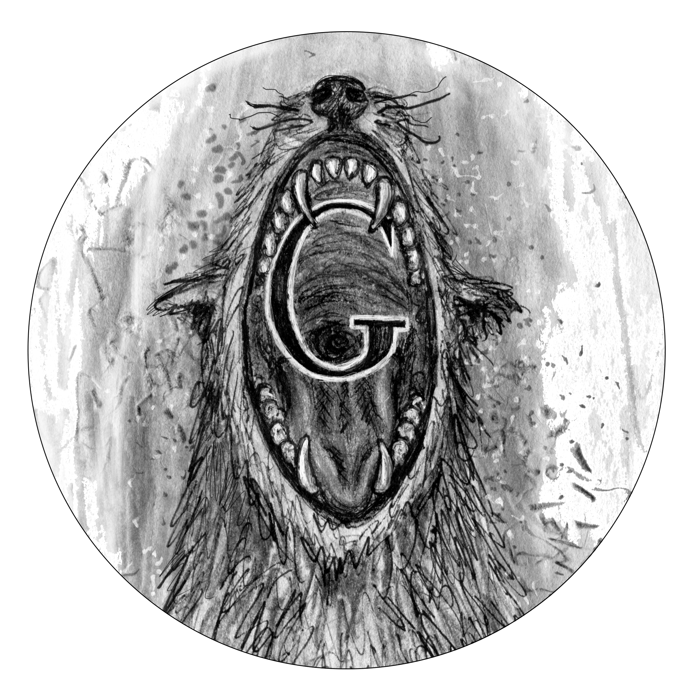

A
-
A BON SANT T’ENCOMANES: adverteix que no cal fiar-se d’algú en concret.
-
A BONDÓ: en abundància. A Borriana pronunciem “a bondo”. És una expressió, com tantes altres,
caiguda en desús.
-
A BONES: amistosament.
-
A BORBOLLONS: en gran quantitat, tumultuosament i amb intermitències.
La sang eixia de la ferida a borbollons(
AVL).
-
A BRAÇ: sostindre un pes o alçar una cosa amb la força dels braços.
-
A BURRO BARRA: fer les coses de qualsevol manera.
B
-
BALLAR AMB LA MÉS LLETJA: passar-s’ho malament. (Bessó)
-
BAIXAR DEL BURRO: desistir,desenganyar-se.
-
BALLAR EL BALL DELS NANOS: s’hi aplica a qui demostra indecisió.
-
BALLAR-LI ELS NANOS (A ALGÚ): fer-li festes, o adular-lo.
-
BARRES EN TAULA: aplegar amb retard al menjador, quan ja estan tots els comensals seguts a taula.
(
Buris-ana 22:3)
-
BATRE L’EMPALL: separar el gra de la palla. (Bessó)
C
-
CA: abreviatura de “casa”.
Anem a referescar a ca la Mecus?
-
CADASCÚ EN SA CASA i DÉU EN LA DE TOTS: fòrmula emprada en la conclusió d’una disputa o un desacord.
-
CADASCÚ SAP EN SA CASA ON ES PENJA EL CRESOL: s’usa per a indicar que cada persona té els seus
costums i la manera pròpia de vore les coses (
AVL). (
Buris-ana 67:3)
-
CADASCÚ TÉ UN RALL EN LO VENTRE: es refereix a que n’hi ha diferents modos de pensar. (Buris-ana
32:3).
-
CAGAR AL VOL: improvisar, inventar sense massa fonament.
-
CAGAR-SE EN LA MARE QUE EL/LA VA PARIR: maleir.
D
-
D’ALLÒ QUE PARLARÀS, TOCARÀS: qui parla mal o li fa mal a algú, acaba per rebre el mateix tracte.
-
D’ANAR PER CASA: anar vestit amb comoditat. També es diu de qui és poc pretenciós.
-
D’ARA EN AVANT:a partir d’este moment.
-
DAVANT DELS NASSOS: a la vista, però ben a prop.
-
DE BANDA DE CUIXA: es diu d’una persona molt unida a una família que no és la seua, principalment
per raons d’amistad. (
Buris-ana 139:3)
-
DE BON MATÍ: molt matí.
E
-
EIXA HACA, AVANT! EIXA HACA, UÒ!: Crits de carreter, que servien perquè parara o arrancara a
moure l’haca.
-
EIXAMPLAR-SE COM UNA LLOCA: posar-se tou, és a dir, estar pagat, envanit. (Bessó).
-
EIXES RISES ACABARAN EN UN PLOR: advertència que ens feia la mare quan erem xiquets i ens veïa
jugar massa excitats.
-
EIXIR DE L’OU: inexperiència.
-
EIXIR DE POLLEGUERA: superar les misèries. (Bessó).
-
EIXIR FAVA: J. Urios glossa esta antiga expressió borrianenca(
Buris-ana 104:3), que pel que explica es pareix a la més coneguda “ficar fava”, o siga, intervindre
en qualsevol assumpte encara que no t’hagen convidat a participar-hi.
F
-
FALTAR-LI UN BULL: tindre poc d’enteniment.(Bessó), (
Buris-ana 53:3).
-
FALTAR-LI UN REGÓ: equivalent a “no estar acabat”, persona que es troba un escaló per davall
de la intel•ligència tinguda per normal. També diem “faltar-li un bull”.
-
FAREM FOC O FUGIREM?: És la resposta automàtica per a qui té l’ocurrència de preguntar en veu
alta: Què fem? o Què farem?.
-
FER AMPARDES: juntar i emparellar (
Buris-ana 108:3).
-
FER HARCA: lluitar a pedrades entre dos bàndols de xiquets. L’etimologia ve de l'àrab marroquí
harka, ‘moviment de tropes, pas de càrrega’ (
DCBV). De fet n’hi ha una pel•lícula bèl•lica espanyola amb eixe títol, del director Carlos Arévalo,
estrenada a Borriana a principis dels 40’s.
-
FER A MIQUETES:destroçar una cosa, fragmentar-la. Tambédiem “fer a trossets”.
G
-
GENS NI GOTA: no gens.
Hi ha aigua? He obert l’aixeta i no n’ix gens ni gota.
-
GENS NI MIQUETA: no gens.
-
GIRAR CAP EN CUA: fer mija volta i anar-se’n (
AVL).
-
GIRAR LA CARA (A ALGÚ): negar-li la salutació.
-
GIRAR L’ESQUENA (A ALGÚ): retirar-li la salutació o l’ajuda.
He vist Manolo i m’ha girat l’esquena.
-
GALLEGO L’ÚLTIM: en temps passats també s’ha dit a Borriana esta frase, un poc xenòfoba. Els
pobres gallegs, emigrants per necessitat, han hagut de suportar esta llufa.
H
-
HAVER DIT “BARRANQUITO”: s’usa quan algú no s’aclarix amb allò que pregunta o que vol dir. Està
basada en una contalla, segons la qual un foraster que parlava castellà li va preguntar a un guàrdia
municipal (de malnom“el polissero de les dones”) si sabia on era el carrer San Bartolomé, sense lograr
obtindre una resposta satisfactòria. Finalment, quan el perplex guàrdia va comprendre de què anava
la pregunta, li va replicar autojustificant-se: “hombre, haver dicho Barranquito”.(El nom popular
d’este carrer, que coincideix amb part oriental de l’antiga muralla circular del poble, és El Barranquet).
-
HAVER-NE PER A DONAR I VENDRE: expressa molta quantitat d’alguna cosa.
-
HAVER-NE PROU: doncs això: s’ha acabat!
-
HAVER-NE UN CAFÍS: com l’anterior de “donar i vendre”. El cafís (= “cahiz” en castellà) és una
antiga mesura de capacitat de sòlids, especialment cereals. Esta expressió recorde que era prou corrent
fins no fa tants anys.
-
HAVER-HI (TINDRE) BONA SAÓ: estar molt ocupat en alguna cosa.
-
HAVER-HI ROBA ESTESA: frase en clau entre adults, que es diu quan hi ha xiquets presents i cal
moderar el llenguatge.
I
-
I AVANT: En el sentit de “prou”, o de “mamprengam una altre assumpte”.
Me’n menjaré una més, i avant.
(
Buris-ana 11:3)
-
I AIXÒ, BARATA QUÈ?: Forma de reclamar explicacions sobre algun succeït. (El verb baratar significa
intercanviar).
-
IÉÉ, T’AFAITE O QUÈ?:Així avisem i fem notar la nostra presència, perquè la gent s’assabente
que acabem d’aplegar.
-
I PARA JA DE COMPTAR!: vol dir que ja n’hi ha prou!
J
-
JA CLUIXIRÀ EL CÀNEM: s'usava —a voltes com a excusa— per indicar que cal ocupar-se de les coses
quan sorgixen, sense anticipar-se als fets (
AVL). La planta del cànem tardava molt de temps en ser apta per a la collita, i se sabia queestava
apunt quan “cluixia” (
Buris-ana 4:3).
-
JA L’HEM CAGAT, LLAURAOR!: Vol expressar-se la certidumbre d’haver comés un error, d’haver-te
equivocat.
-
JA POT DIR MISSA: amb esta frase volem advertir a algú que no anem a fer-li cas.
-
JA VENEN DES DE LA VALL: es deia quan es veia vindre una tormenta per la serra d’Espadà. La frase
se completava amb “… farts de figues que rebenten”, en al•lusió als trons.
-
JA VENEN DES DE LA VILA-VELLA: com l’anterior.
-
JESÚS, MARIA I JOSEP!: Expressió que indica esglai, sorpresa, etc., davant un esdeveniment. (
DSFF).

 



 
